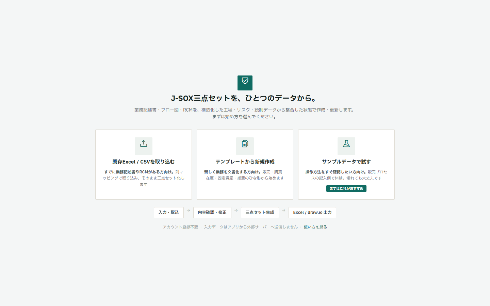
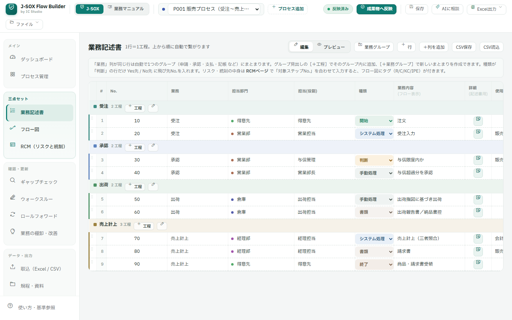
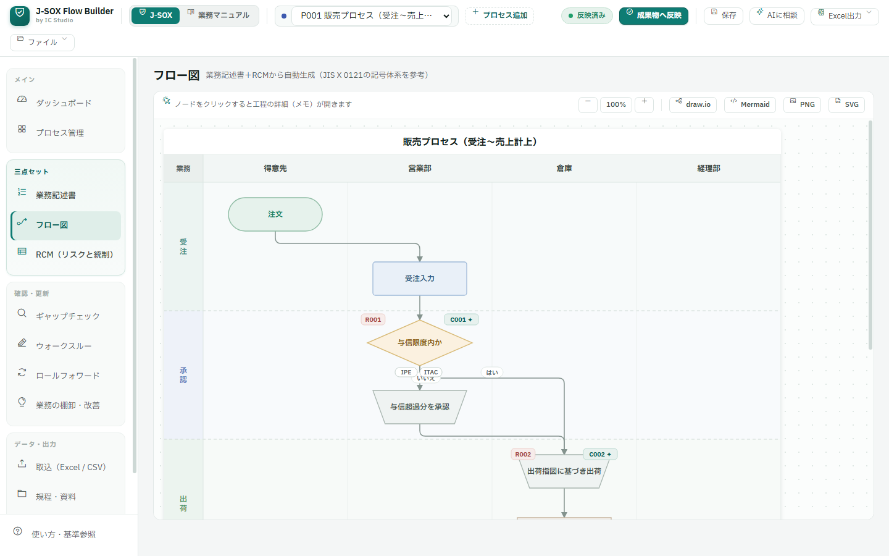
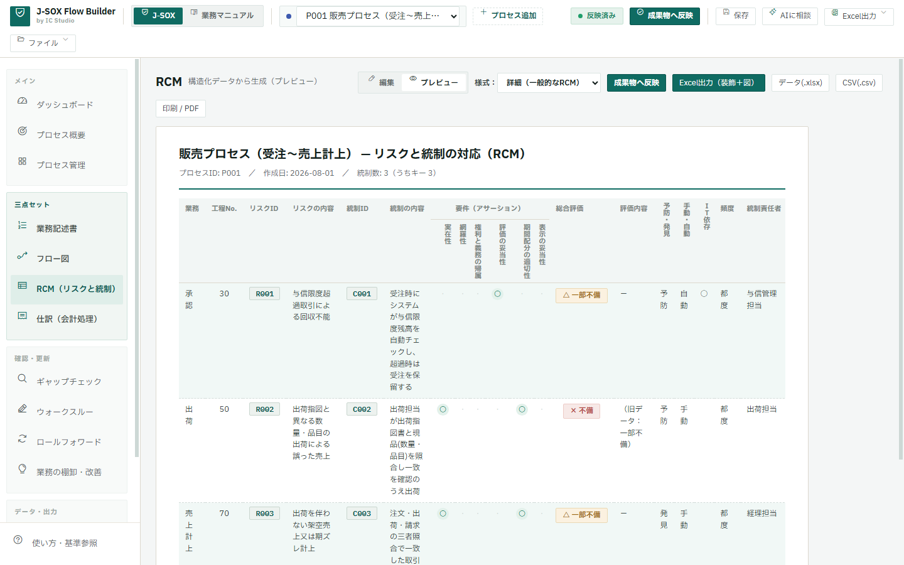
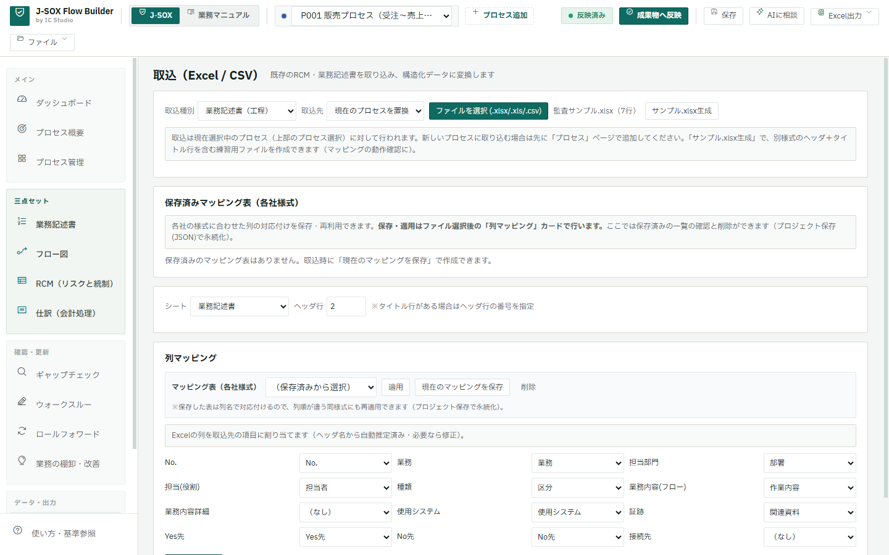
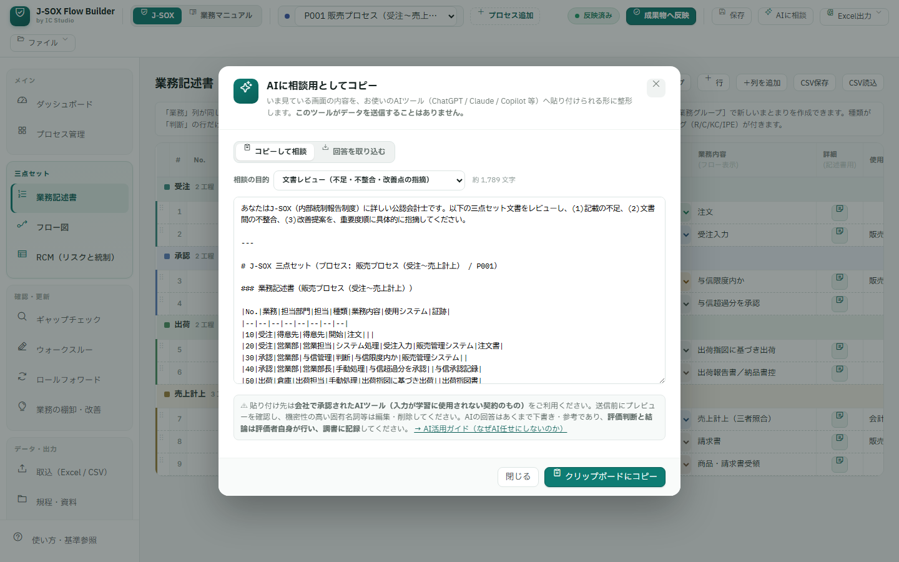
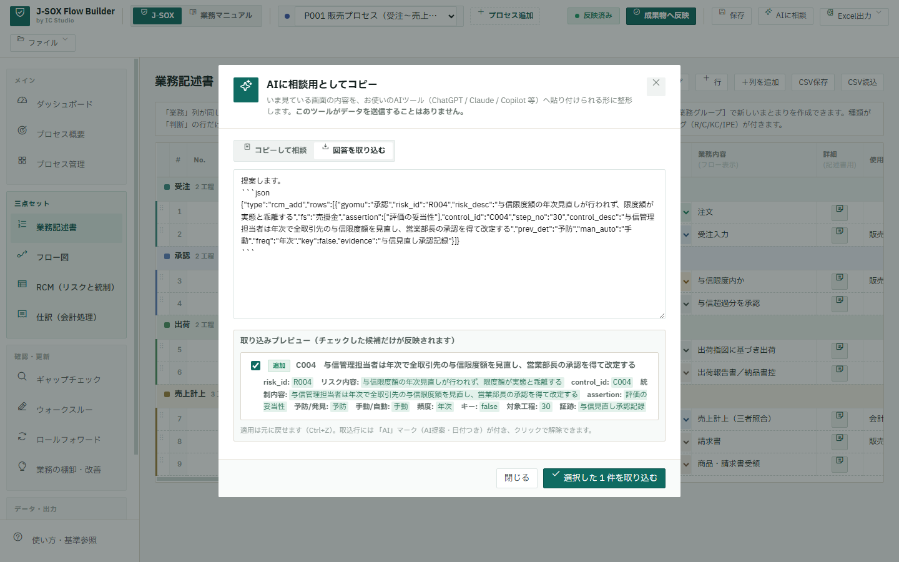
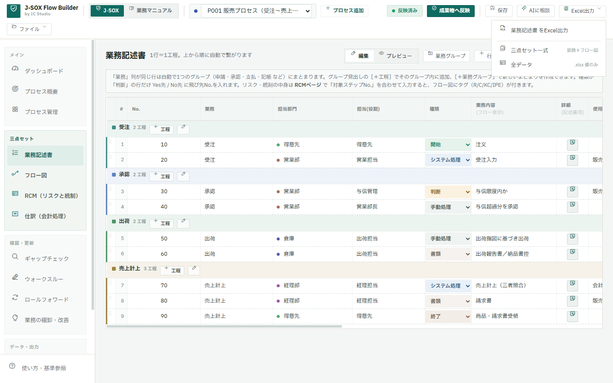

業務記述書・業務フロー図・RCMを別々のExcelで管理するのではなく、工程・リスク・統制を一元管理し、整合した成果物として出力できる無料ツールです。
公認会計士が実務上の課題をもとに開発しています。インストール不要。入力した業務データはアプリから外部サーバーへ送信しません。
三点セットは本来「同じ業務」を表す資料なのに、実務ではバラバラに壊れていきます。
業務記述書・フロー図・RCMを別々のExcel/PowerPointで更新している
1つ修正するたびに、他の資料との統制番号・工程のズレが発生する
毎期Excelをコピーし続け、構造や更新理由が誰にも分からなくなる
AIで文章やRCM案を作っても、正式成果物として管理する場所がない
「1か所に入力すれば魔法のように全部完成」ではありません。工程データとRCM（リスク・統制）データを構造化して管理し、そこから3つの成果物を整合した状態で生成・更新する設計です。
1行＝1工程。既存Excel/CSVの取込やテンプレートからも開始できます
RCMで対象工程No.を指定すると、工程×リスク×統制が紐づきます
業務記述書・フロー図（JIS記号）・RCMが同じデータから同期生成されます
Excel（装飾付き）・draw.io・PDF/印刷・CSV・PNG/SVGへ
クリック（タップ）で拡大できます。すべて現行バージョンの実機画面・サンプルデータです。








補足：必要に応じて、整備・運用評価、サンプリング調書、不備管理、証憑管理などの評価機能もオンにして利用できます（初期状態では非表示）。
操作画面だけでなく、最終的に手に入るものをご覧ください。すべてサンプルデータからの実際の出力です（クリックでダウンロード）。
サンプルを開く → 工程を編集 → 成果物へ反映 → フロー図が更新 → Excelを出力。
動画は準備中です。上の画像は実際のフロー図画面です。今すぐ試したい方はサンプルデータで開始すると、画面右下のガイドが同じ4ステップを案内します。
AIによる完全自動化は目指していません。考えるのはAI、構造と整合を守るのはツール、決めるのは人間です。
| AI | 下書き、文章改善、リスク候補、網羅性確認、壁打ち |
|---|---|
| 本ツール | 構造化、三点セット間の整合、保存、差分確認、成果物出力 |
| 人間 | 内容確認、判断、修正、承認、最終責任 |
AIでRCMや業務記述の案は作れます。しかし、工程・リスク・統制の関係を保ち、三点セットを継続的に更新するためには、構造化された正本が必要です。
想定利用者：上場企業の内部統制担当者／IPO準備企業／公認会計士／内部監査担当者／管理部門。
J-SOXは不要ですか？ 中小企業・士業・バックオフィスの方には、同じエンジンで動く業務マニュアル・業務フロー図作成ツール（脱属人化・引継ぎ用）をご用意しています。手順を表に書くだけで、フロー図・チェックリスト・引継ぎ資料まで自動生成します。
業務マニュアル版を見る →